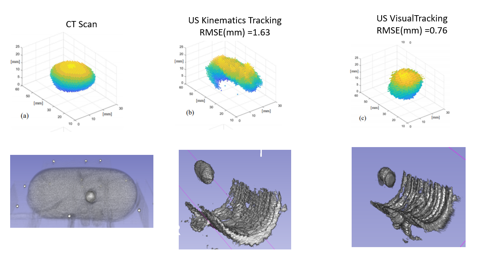
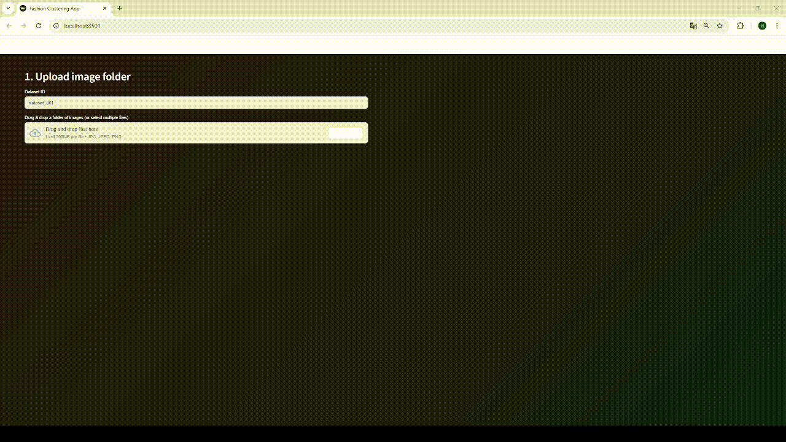

Harris Komninos
Machine Learning Engineer | Computer Vision & Generative AI
Machine Learning Engineer | Computer Vision & Generative AI
General Domains
AIMachine LearningDeep Learning Computer VisionMedical Imaging RoboticsLLMs
Applications
Semantic SegmentationSuper-resolutionObject Detection and TrackingRobot ControlRobot Localization
Architectures & Methods
TransformersCNNsRNNsGANsDiffusion ModelsContrastive LearningKnowledge DistillationRAG
Programming
PythonC++MATLAB SQLGitDockerLinux
Frameworks & Tools
PyTorchTensorFlowJAX NumpyScikit-learn PandasOpenCV TensorRTONNXLangChain ChromaDBOllamaROS 2MONAISlicer3D Weights & BiasesAWS Hugging Face
King’s College London (KCL), School of Biomedical Engineering (Apr 2024 – Aug2025)
Vision-based semi-automated therapy delivery in eye surgery (NIHR funded):


Sensor Coating Systems & Queen Mary University of London (Jun 2023 – Nov 2024)
Deep learning visual SLAM for robot localization in aerospace environment (NATEP funded):
.gif)
University College London (UCL), WEISS & Computer Science Dept. (Apr 2019 - Jun 2019)
Ultrasound 3D Reconstruction of Tumor Masses in Robotic-Assisted Nephrectomy:

King’s College London (KCL), School of Biomedical Engineering (Oct 2020 – Mar 2024)
Deep learning super-resolution in Optical Coherence Tomography (OCT):
Additional Activities:

University of Patras (Oct 2013 – Feb 2019)

